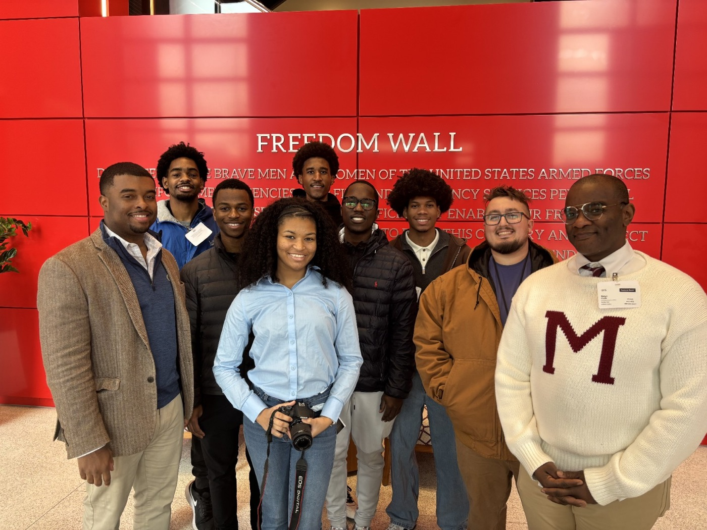
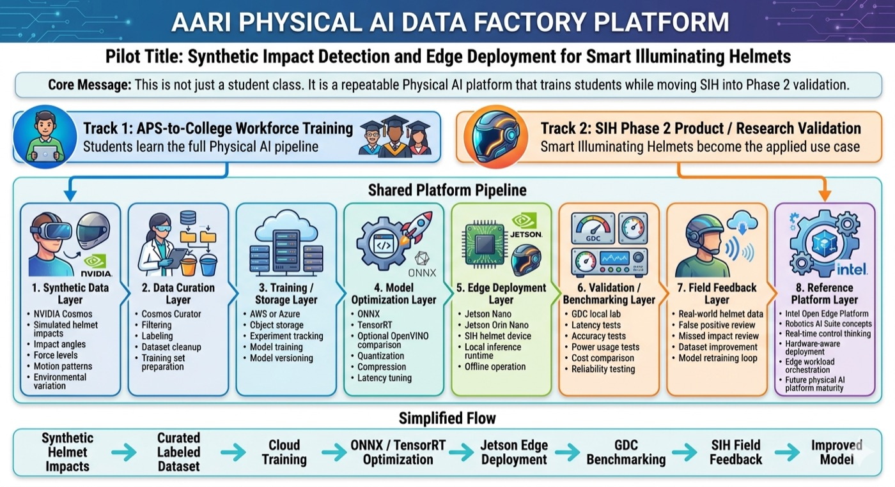

6
AARI Impact and Cohort Results
Proof from the rooms where students build.
AARI's work is visible in student sessions, partner visits, lab tables, data center discussions, Smart Illuminating Helmet reviews, and applied AI infrastructure presentations.
Summer 2026 Cohort
From technical access to applied work.
Across six documented reporting weeks, AARI's six-participant cohort logged 474.5 reported participant-hours across at least 147 participant-days. Thirty-four weekly entries show students moving through Linux, cloud, robotics, cybersecurity, and data-center operations while documenting the problems they encountered and the workarounds they used.
474.5
Reported participant-hours
147+
Recorded participant-days
34
Weekly progress entries
Applied work
Connected technical fields, not isolated lessons.
- Robotics and Linux: ROS 2 coursework, Raspberry Pi firmware and networking, SSH configuration, robot assembly, and LiDAR-focused learning.
- Cloud and accelerated computing: cloud architecture instruction and reported workflow submissions, including a GPU-validation run.
- Infrastructure and cybersecurity: monitoring and visualization tools, a security-orchestration dashboard, and an interactive threat-map feature.
- Knowledge sharing: robotics curriculum development and technical education videos.
Cohort insight
Persistence became the operating skill.
Students did more than report completed coursework. They documented failures involving network access, SSH keys, headless hardware, firmware, mechanical components, software configuration, and project scope.
They adapted by reflashing systems, using direct displays, working with simulated data and virtual machines, changing configurations, and applying mentor feedback. The data points to a clear next-cohort improvement: front-load access checks and capture portfolio-ready evidence throughout the program.
Source: self-reported AARI cumulative cohort tracker compiled August 28, 2026. The tracker captures six of seven planned reporting weeks; the cohort concluded September 4. Final-week activity and external evidence verification were not complete. Results are published only as de-identified whole-cohort aggregates. Read the impact methodology.
Student Workshops

Students in technical lab sessions at Morehouse

AARI partner and student workshop

Students collaborating during an AARI workshop table session
Corporate Exposure

AUC students visiting Microsoft for applied AI and infrastructure exposure

AARI student cohort at Microsoft Atlanta

Student-led discussion during Microsoft session
Robotics and Edge AI Labs

Garage Data Center work session with students

Students reviewing live systems inside the Garage Data Center

Applied infrastructure visual for robotics and edge AI development
Smart Illuminating Helmet

Smart Illuminating Helmet product review session

Smart Illuminating Helmet development work session
AARI Leadership

AARI leadership presenting applied AI infrastructure work
Proof, Not Theater
Students do not just hear about AI, robotics, cloud, edge computing, and infrastructure. They see it, touch it, question it, and build with it.